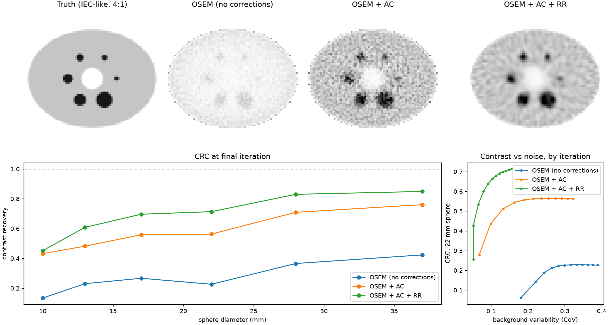
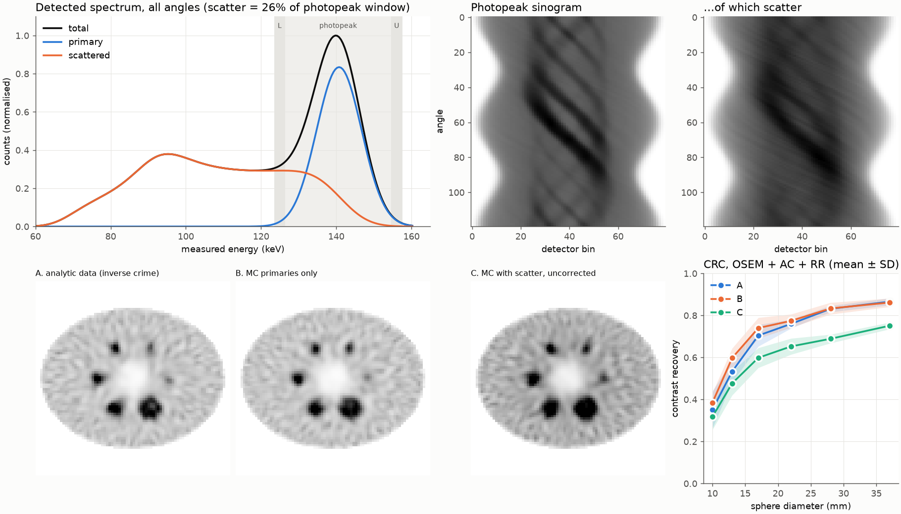
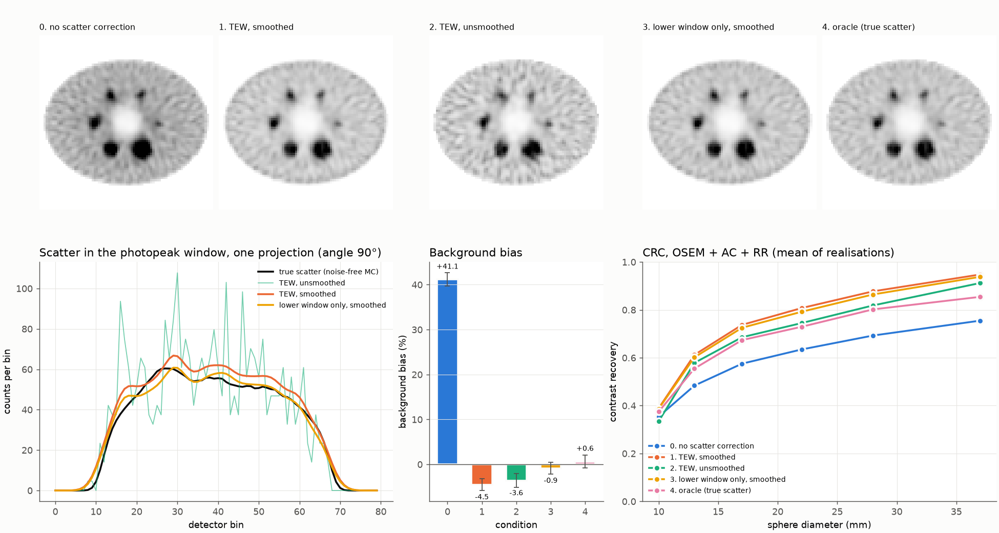
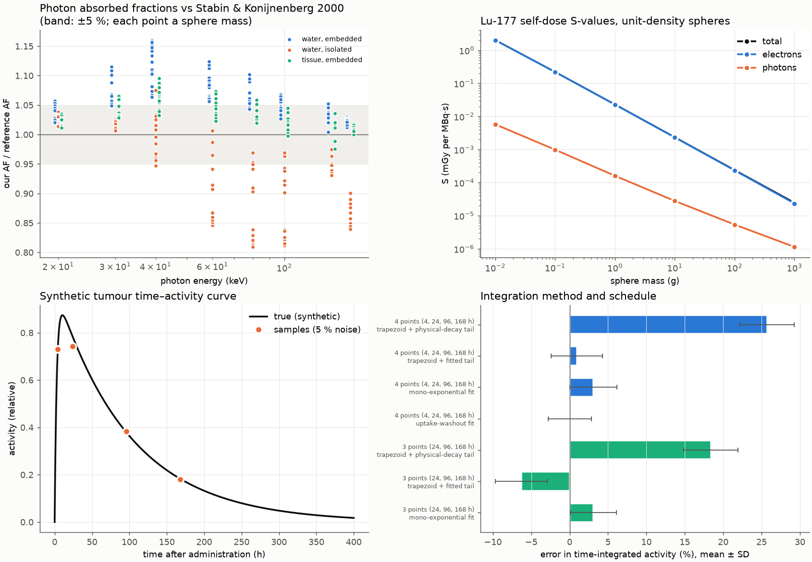

nucmed-pipeline: a SPECT imaging and Lu-177 dosimetry pipeline, validated stage by stage
Abstract
I describe a nuclear medicine pipeline written from scratch in Python, from an emitted photon to a reconstructed SPECT image to an absorbed dose. It comprises an analytic forward model with attenuation and depth-dependent collimator blur, OSEM reconstruction, a Monte Carlo photon transport code with Compton and Rayleigh scattering, triple-energy-window scatter correction, and Lu-177 sphere dosimetry in the MIRD formalism. Before each stage was implemented, the result it had to reproduce and the tolerance were written down. Of 14 such targets, 13 were met and one was met in part. In an IEC-like phantom, 26% of photopeak counts are scattered photons. Left uncorrected they bias the background by +41 %; TEW correction reduces this to -4.5 %. The code has 106 automated tests, and every number below is read from the files the analysis scripts write.
1Introduction
Quantitative SPECT turns detected photons into activity concentrations and, in radionuclide therapy, into absorbed dose. Each step introduces its own error: attenuation, finite collimator resolution, scatter, noise, and the way activity is integrated over time. This project builds each step from first principles and checks it against something independent: an analytic result, a reference database, or a published Monte Carlo calculation. The stages are:
- a digital IEC-like phantom (six hot spheres of 10–37 mm, a lung insert, an attenuation map);
- projection, either by an analytic system matrix or by Monte Carlo photon transport with scatter;
- MLEM/OSEM reconstruction [1, 2] with attenuation correction (AC) and resolution recovery (RR);
- triple-energy-window (TEW) scatter correction [3];
- Lu-177 dosimetry: time–activity integration and MIRD S-values for spheres.
The working rule is that a target is fixed before the code that has to meet it. Targets and later changes are kept in a dated changelog in DESIGN.md, and Table 1 lists every target with its outcome. Only synthetic phantoms are used.
2Validation targets and outcomes
| Stage | Target | Outcome | Evidence |
|---|---|---|---|
| 1 | Projector: adjoint identity, count conservation, point-source centroid and width, attenuation vs analytic chord (≤ 1 %) | Met | tests/test_projector.py |
| 1 | MLEM/OSEM: counts preserved, likelihood never decreases, 1 subset = MLEM, AC restores a uniform disk (≤ 3 %) | Met | tests/test_recon.py |
| 2 | Narrow-beam μ from simulated transmission within 2 % of NIST XCOM | Met | tests/test_mc.py |
| 2 | Sampled Compton angles follow Klein–Nishina (χ², 106 samples, p > 0.01) | Met | tests/test_mc.py |
| 2 | Monte Carlo primaries vs analytic projector: totals within 2 %, NRMSE < 5 % (observed 0.05 % and 1.2 %) | Met | tests/test_mc.py |
| 2 | Uncorrected scatter lowers CRC for every sphere and biases the background upward | Confirmed | results/mc_iec/metrics.json |
| 3 | Smoothed TEW brings the background bias closer to zero than no correction | Met | results/tew/metrics.json |
| 3 | Predicted from window totals: TEW over-corrects (negative bias); the lower window alone does better | Confirmed | results/tew/metrics.json |
| 4 | Lu-177 decay data: spectrum mean vs ENSDF branch mean within 1 % (observed 0.8 %) | Met | results/dosimetry/metrics.json |
| 4 | Photon absorbed fractions within the EGS4–MCNP spread (floor 5 %) of Stabin & Konijnenberg 2000: 59/112 rows; 37/37 at 100–160 keV | Partly met | results/dosimetry/photon_af_validation.csv |
| 4 | Small-sphere limit AF → μen·3R/4 | Met | tests/test_dosimetry.py |
| 4 | Straight-line CSDA electron model is a lower bound on the reference (95/95 rows) | Met | results/dosimetry/metrics.json |
| 4 | Photon point kernel conserves energy and reproduces the direct sphere result (≤ 3 %) | Met | tests/test_dosimetry.py |
| 4 | Time–activity fits and integrals exact on noise-free data | Met | tests/test_dosimetry.py |
3Forward model and reconstruction
The system matrix A maps an 80 × 80 activity image (4 mm pixels) to 120 projections. Each element is the attenuation along the ray to the detector multiplied by a Gaussian collimator response whose width grows with source-to-collimator distance. A is stored explicitly, so the back-projector is its exact transpose. OSEM applies the MLEM update [1] over ordered subsets of angles [2], with an optional known additive term r:
Table 2 shows contrast recovery for the IEC-like slice (106 counts, 12 iterations × 8 subsets). The values come from a single noise realisation and should be read as ±0.05. The AC + RR row is optimistic, because the data were generated with the same model used to reconstruct them; Section 4 removes this.
| Reconstruction | 10 mm | 13 | 17 | 22 | 28 | 37 | Bkg CoV |
|---|---|---|---|---|---|---|---|
| OSEM (no corrections) | 0.13 | 0.23 | 0.27 | 0.23 | 0.37 | 0.42 | 0.39 |
| OSEM + AC | 0.43 | 0.48 | 0.56 | 0.56 | 0.71 | 0.76 | 0.32 |
| OSEM + AC + RR | 0.45 | 0.61 | 0.70 | 0.71 | 0.83 | 0.85 | 0.16 |

4Monte Carlo photon transport
Photons are tracked in a water-equivalent density map using NIST XCOM cross-sections [6], Klein–Nishina Compton angles [4], Thomson angles for Rayleigh scattering, and Woodcock tracking through the heterogeneous medium. Detection uses forced detection along each collimator axis, and an energy resolution of 10 % FWHM with energy windows. With scatter switched off, the simulated projections agree with the analytic projector to within 0.05 % in total counts. Table 3 compares three data sets, each reconstructed with the Stage 1 AC + RR model: (A) analytic projections, (B) Monte Carlo primaries only and (C) Monte Carlo with scatter.
| Data | 10 mm | 13 | 17 | 22 | 28 | 37 | Bkg bias |
|---|---|---|---|---|---|---|---|
| A. analytic data (inverse crime) | 0.35±0.09 | 0.53±0.05 | 0.70±0.05 | 0.76±0.02 | 0.83±0.02 | 0.87±0.02 | +0.2 % |
| B. MC primaries only | 0.39±0.05 | 0.60±0.05 | 0.74±0.05 | 0.77±0.03 | 0.83±0.03 | 0.86±0.02 | +0.1 % |
| C. MC with scatter, uncorrected | 0.32±0.06 | 0.48±0.06 | 0.60±0.05 | 0.65±0.04 | 0.69±0.02 | 0.75±0.02 | +40.8 % |
A and B agree within noise, so replacing the analytic data with an independent forward model costs almost nothing here. Scatter does: uncorrected, it lowers the 37 mm CRC from 0.87 → 0.75 and raises the background estimate by +41 %.

5Scatter correction
The TEW method [3] estimates the scatter counts in the photopeak window of width WP from the counts CL, CU in two narrow windows of widths WL, WU on either side:
The estimate, smoothed, enters Eq. (1) as r. Before running, I predicted from the noise-free window totals that TEW would over-estimate scatter, because primary photons spill into the side windows at this energy resolution. Table 4 shows the outcome. TEW takes the background bias from +41.1 % to -4.5 %, with a scatter estimate 1.14 times the truth; the lower window alone gives -0.9 %.
| Scatter correction | Background bias | Scatter est. / true | CRC 37 mm | Bkg CoV |
|---|---|---|---|---|
| no scatter correction | +41.1 %±1.5 | – | 0.76 | 0.14 |
| TEW, smoothed | -4.5 %±1.3 | 1.14 | 0.95 | 0.17 |
| TEW, unsmoothed | -3.6 %±1.6 | 1.14 | 0.91 | 0.25 |
| lower window only, smoothed | -0.9 %±1.3 | 1.04 | 0.94 | 0.16 |
| oracle (true scatter) | +0.6 %±1.4 | 1.00 | 0.85 | 0.15 |
One result needs care. TEW reaches a 37 mm CRC of 0.95, above the 0.85 obtained with perfect knowledge of the scatter. Noise-free diagnostics attribute about half of this to an estimate that is both too large and too smooth; the remainder appears only with noise and is not explained. Contrast recovery read alone would reward over-correction; the bias against known truth exposes it.

6Lu-177 dosimetry
In the MIRD formalism the mean absorbed dose to a sphere of mass m is the time-integrated activity à times an S-value built from the mean energy emitted per decay Δi and the absorbed fraction φi of each radiation type:
Decay data come from the ENSDF evaluation via the IAEA LiveChart [9] (half-life 6.6443 d). Electron absorbed fractions come from Stabin and Konijnenberg [5], with electron ranges [7] used for a lower-bound check. Photon absorbed fractions come from a 3D version of the Monte Carlo, checked against the same paper's EGS4 and MCNP tables and, for small spheres, against the analytic limit from energy-absorption coefficients [8]. A download script fetches every reference table and records where it came from.
The photon check is met in part. 59/112 table rows fall within the reference codes' own spread, including 37/37 at 100–160 keV, where Lu-177's gammas lie. The first model placed the sphere in vacuum (60/112 rows); the reference embeds it in an infinite medium, and the geometry was corrected to match. The remaining disagreement is at 30–60 keV, where water absorbs more than the tissue used in [5]. An exploratory run with soft-tissue cross-sections passes 104/112 rows. Photons contribute a few percent of the Lu-177 dose, so the effect on S is below 0.3 %.
| Sphere | S (mGy per MBq·s) | Electron AF | Photon AF | Photon share of S |
|---|---|---|---|---|
| 0.01 g | 2.01 | 0.85 | 0.009 | 0.3 % |
| 0.1 g | 0.22 | 0.93 | 0.016 | 0.4 % |
| 1 g | 0.0229 | 0.96 | 0.026 | 0.7 % |
| 10 g | 2.34 × 10-3 | 0.98 | 0.045 | 1.2 % |
| 100 g | 2.38 × 10-4 | 0.99 | 0.087 | 2.3 % |
| 1000 g | 2.45 × 10-5 | 0.99 | 0.184 | 4.6 % |
Table 6 integrates a synthetic tumour time–activity curve (uptake half-time 2 h, biological washout half-life 120 h) sampled with 5 % noise, over 2000 draws. A trapezoid with a physical-decay-only tail after the last sample over-estimates à because it ignores washout; an uptake–washout fit to four samples is unbiased.
| Integration method | Samples | Mean error | SD |
|---|---|---|---|
| trapezoid + physical-decay tail | 4 points | +25.7 % | 3.6 % |
| trapezoid + fitted tail | 4 points | +0.9 % | 3.3 % |
| mono-exponential fit | 4 points | +3.1 % | 3.0 % |
| uptake-washout fit | 4 points | +0.0 % | 2.8 % |
| trapezoid + physical-decay tail | 3 points | +18.4 % | 3.5 % |
| trapezoid + fitted tail | 3 points | -6.3 % | 3.4 % |
| mono-exponential fit | 3 points | +3.1 % | 3.0 % |

7Limitations and open questions
- Imaging is two-dimensional: one slice through a phantom extended infinitely along the axis, which overstates scatter from out-of-slice activity.
- Rayleigh scattering has no atomic form factor. The collimator response is the same Gaussian model in simulation and reconstruction; septal penetration is not modelled.
- Image-quality metrics follow NEMA NU 2 in structure only.
- Dosimetry is at sphere level. Voxel-level dose, and a comparison with a published Lu-177 voxel S-value database, are not done; there is no external check of the Lu-177 S-values themselves.
- Not yet explained: the noise-dependent part of TEW's contrast inflation, and the residual photon disagreement at 30–40 keV.
- This is research and teaching code using synthetic phantoms. It is not a medical device.
8Reproducibility
The code requires Python 3.12 and uv. The test suite runs in about 30 s and the four analyses in about three minutes on a laptop. This page is generated from the result files by the last command.
uv sync uv run pytest # 106 tests uv run python scripts/run_iec_demo.py # Section 3 uv run python scripts/run_mc_demo.py # Section 4 uv run python scripts/run_tew_demo.py # Section 5 uv run python scripts/run_dosimetry_demo.py # Section 6 uv run python scripts/build_site.py # this page
References
- [1]L. A. Shepp and Y. Vardi. Maximum likelihood reconstruction for emission tomography. IEEE Transactions on Medical Imaging, 1(2):113–122, 1982. doi:10.1109/TMI.1982.4307558
- [2]H. M. Hudson and R. S. Larkin. Accelerated image reconstruction using ordered subsets of projection data. IEEE Transactions on Medical Imaging, 13(4):601–609, 1994. doi:10.1109/42.363108
- [3]K. Ogawa, Y. Harata, T. Ichihara, A. Kubo and S. Hashimoto. A practical method for position-dependent Compton-scatter correction in single photon emission CT. IEEE Transactions on Medical Imaging, 10(3):408–412, 1991. doi:10.1109/42.97591
- [4]O. Klein and Y. Nishina. Über die Streuung von Strahlung durch freie Elektronen nach der neuen relativistischen Quantendynamik von Dirac. Zeitschrift für Physik, 52:853–868, 1929. doi:10.1007/BF01366453
- [5]M. G. Stabin and M. W. Konijnenberg. Re-evaluation of absorbed fractions for photons and electrons in spheres of various sizes. Journal of Nuclear Medicine, 41(1):149–160, 2000. jnm.snmjournals.org/content/41/1/149
- [6]NIST XCOM: Photon Cross Sections Database. physics.nist.gov/PhysRefData/Xcom, accessed 5 November 2026.
- [7]NIST ESTAR: stopping powers and ranges for electrons. physics.nist.gov/PhysRefData/Star/Text/ESTAR.html, accessed 5 November 2026.
- [8]NIST X-ray mass attenuation and mass energy-absorption coefficients, water. physics.nist.gov/PhysRefData/XrayMassCoef, accessed 5 November 2026.
- [9]Evaluated Nuclear Structure Data File (ENSDF), Lu-177 decay (evaluator F. G. Kondev, literature cut-off 30 August 2019), via the IAEA LiveChart of Nuclides API. nds.iaea.org/relnsd, accessed 5 November 2026.
Set in Computer Modern Unicode (SIL Open Font License). Generated by scripts/build_site.py from results/*/metrics.json. Code under the MIT licence at github.com/chrisprb/nucmed-pipeline.